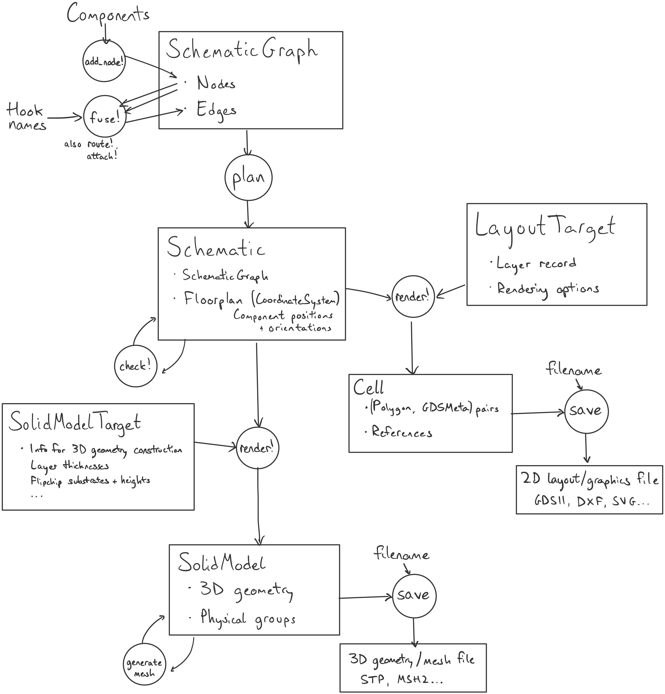

Schematic-Driven Design
Schematic-driven design is DeviceLayout's high-level paradigm for building complex devices from reusable components. The core idea is that you describe your device as a graph of connected components, rather than manually position every element. The module DeviceLayout.SchematicDrivenLayout provides functionality for schematic-driven design.
The schematic-driven design flow goes like this:
- Define the
Componenttypes that will appear in the device. - Set parameters for the component instances that will appear in your device.
- Construct a
SchematicGraphby adding component instances (nodes) and specifying connections between them (edges), including special "route" components that define wires to be automatically routed after other components are placed. - Construct a
Schematicfrom theSchematicGraphby running an automated floorplanning routine that positions and orients components in a 2D layout. - Check that the schematic follows high-level design rules—for example, that all Josephson junctions have the correct orientation for your fabrication process.
- Make any further changes now that components are placed, like creating crossovers between intersecting wires or filling the empty areas of the ground plane with holes for flux trapping.
- Render the schematic, generating 2D geometry for GDSII output or 3D geometry for finite-element simulation.
Here's what that looks like as a diagram, for comparison with geometry-level flows:

Key Concepts
Components
Components are the building blocks—anything from a simple capacitor to a complex transmon qubit. Each component defines:
- Parameters: Configurable properties
- Geometry: What shapes on which layers it consists of
- Hooks: Where and how it can connect to other components
For more on Components, see Concepts: Components and Component API.
Hooks
Hooks are connection points with both position and direction.
When two hooks are "fused," their positions coincide and directions oppose (like fishhooks pulling on each other). By convention, a components' hooks point inward, back towards the component.
Hooks can also have handedness: Fusing a left-handed hook to a right-handed hook will require a reflection in addition to rotation and translation to align the hooks.
See API Reference: Hooks.
The Schematic Graph
The schematic graph is a collection of logical information about the presence of components and their connections. It does not contain any spatial or geometric information. The nodes of the schematic graph correspond to component instances and the edges correspond to connections between them.
In the implementation of SchematicGraph, nodes are ComponentNodes, representing instances of AbstractComponents in the design. The edges are labeled with the names of the components' Hooks that are to be fused together.
A ComponentNode contains an id and a component. A single component may be placed in multiple nodes, but each node will be assigned a unique id within the graph. That unique id is based on name(component) by default.
Nodes are added with add_node! and connected with fuse!. The first node added is the "root" and stays at the origin. All other positions will be calculated relative to it.
Routing
A Paths.Route is like a Path, but defined implicitly in terms of its endpoints and rules (like "use only straight sections and 90 degree turns") for getting from one end to another. We can add a RouteComponent (wrapping a Route) between components in a schematic using route!, creating flexible connections that are only resolved after floorplanning has determined the positions of the components to be connected.
See Concepts: Routes and the Routing in Schematics section in particular.
Planning
plan(graph) traverses the graph and computes positions, returning a Schematic:
- Root component at origin
- For each edge (connection), calculate child position
- Continue until all standard components are positioned
- Draw routes that depend on component positioning
There is a graph-theory term "connected component" unrelated to DeviceLayout.AbstractComponent, indicating a subgraph whose nodes are all connected by edges and which isn't part of a larger such subgraph. For example, a fully connected graph has one connected component, the entire graph. Sometimes you may even hear these called "components", but we use "connected graph component" for the graph-theory sense and "component" for AbstractComponent.
If there are multiple connected graph components, the root (first node added) of each is positioned at the origin.
Cycles in a schematic graph are allowed, but an error will be thrown during plan if they generate inconsistent constraints on component positions.
You can add edges to the schematic graph that will be ignored during plan using the keyword plan_skips_edge=true in fuse!.
Schematics
The Schematic object contains the SchematicGraph as well as the component positions computed by plan. It is itself an AbstractCoordinateSystem, and components are stored and positioned in a hierarchy of references in an internal coordinate system.
It is often necessary to check that a planned Schematic obeys a set of constraints. For instance, you may want to verify that all the junctions in a floorplan are oriented in the right direction for your fabrication process. Instead of doing this by eye, users should call check!(sch::Schematic). This method can run any number of checks provided by the user, but by default it only checks the global orientation of components that implement the SchematicDrivenLayout.check_rotation method.
To be able to build! or render! a floorplan (i.e. turn components into their geometries), users must run check! first. Otherwise, these functions will throw an error.
The Schematic API provides methods for inspecting and modifying the schematic. For example, you can retrieve information about component and hook placement, search the schematic for nodes with certain properties, and replace components.
You can also automatically generate crossovers between Paths and RouteComponents, including those nested within composite components, using crossovers! based on Path intersection functionality.
SchematicDrivenLayout contains some prototype schematic-visualization methods: if GraphMakie is present in the environment, then GraphMakie.graphplot can be used with a SchematicGraph to show nodes and edges or with Schematic to also show the component nodes at their on-chip positions.
Rendering (and Building)
Once you have your schematic, you can render! it to a Cell using a LayoutTarget (for GDS files), or to a SolidModel with a SolidModelTarget (for 3D models). See also Concepts: Rendering and Concepts: SolidModels.
build!, an optional intermediate step between plan and render!, is useful for some workflows. build! instantiates all component geometries, replacing the Components in the schematic's internal coordinate system with their corresponding CoordinateSystems. This can help with debugging, for example, by separating the construction of native CoordinateSystem geometry out from rendering that geometry to backend-specific primitives (Polygons for Cells or plane surfaces for SolidModels).
Example
# Define component connections
g = SchematicGraph("device")
qubit = add_node!(g, Transmon(...))
resonator = fuse!(g, qubit => :readout, Resonator(...) => :input)
feedline = fuse!(g, resonator => :output, Feedline(...) => :p0)
# Plan positions automatically
sch = plan(g)
check!(sch)
# Optional: Replace components with their geometry before rendering
# build!(sch)
# Render to output
render!(cell, sch, target)